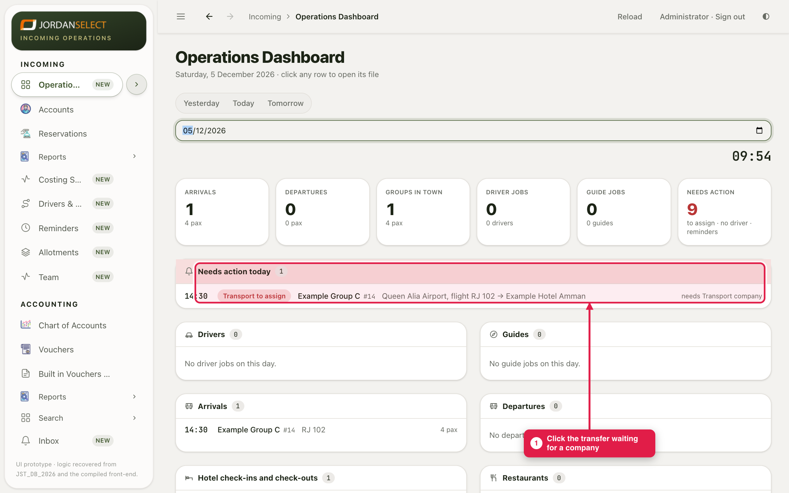
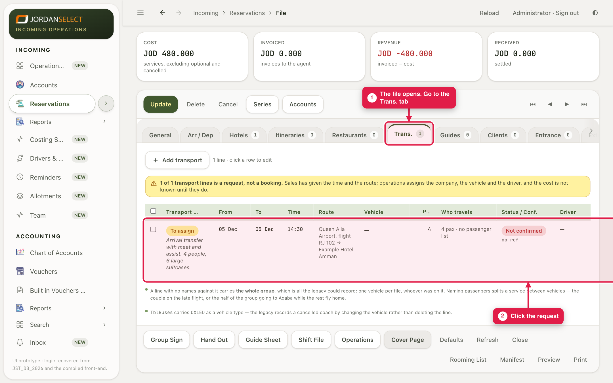
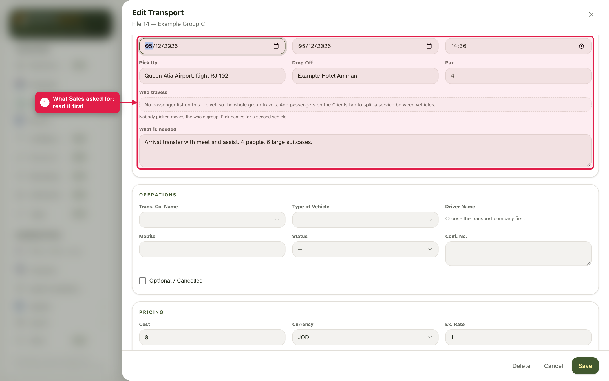
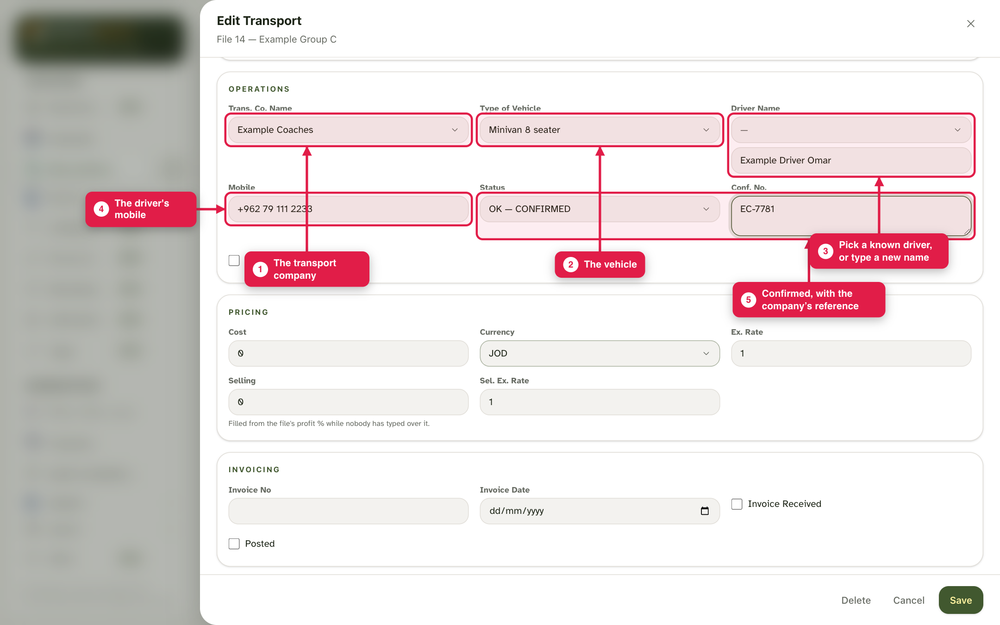
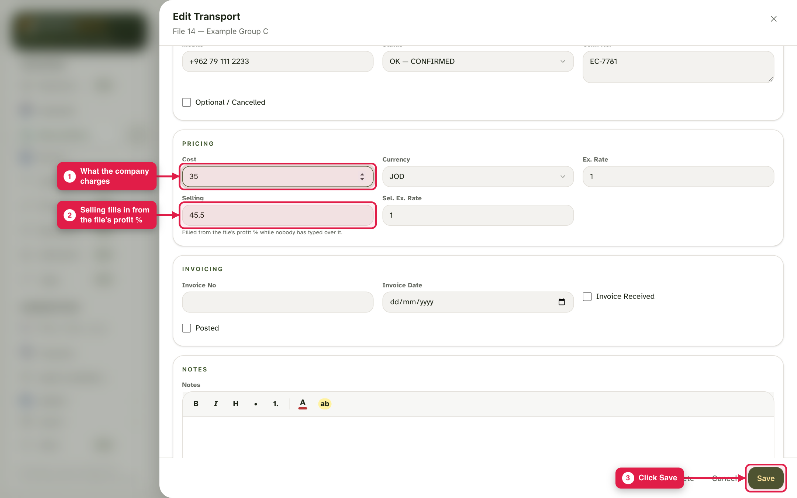
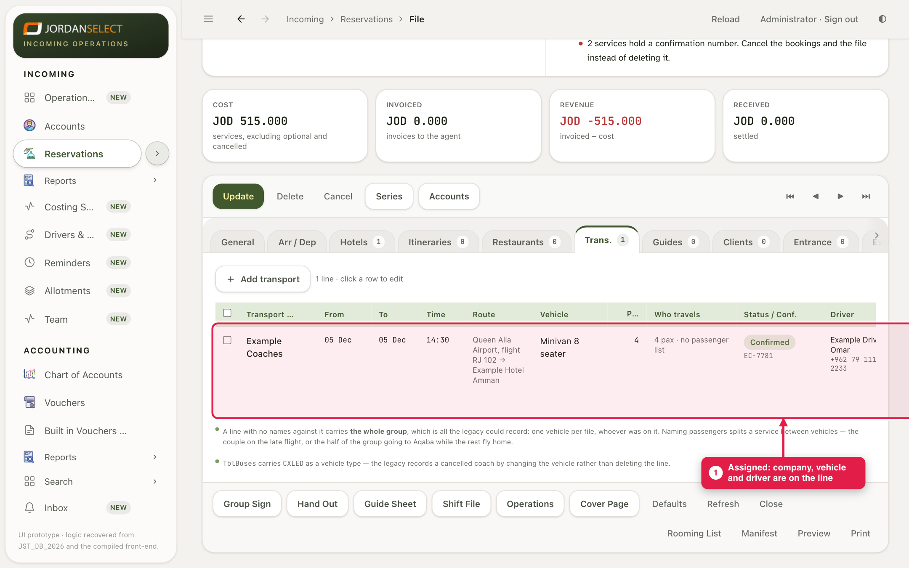
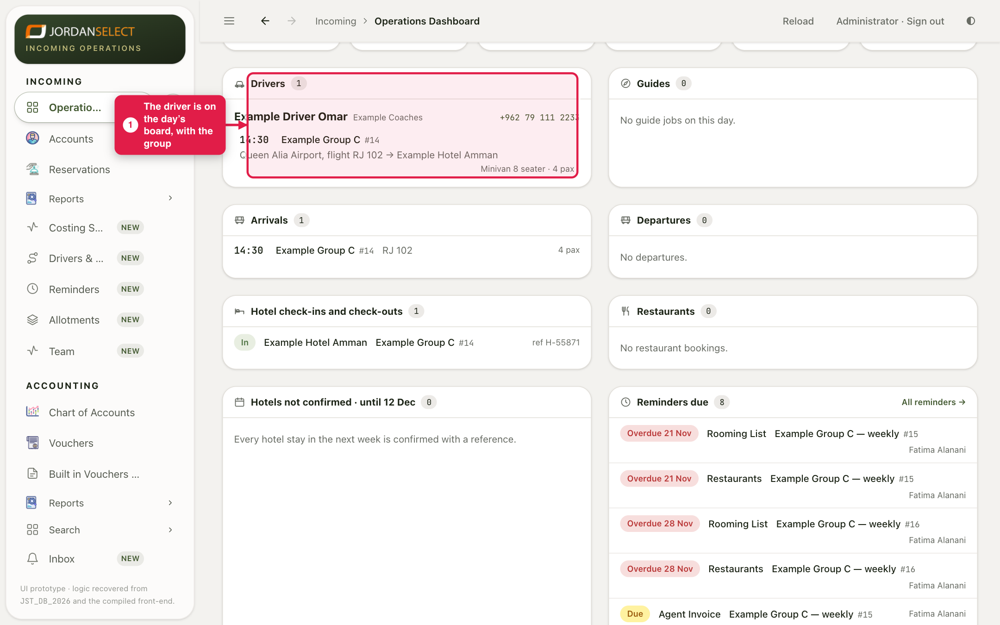

Sales asked for a transfer. Choose the company, the vehicle and the driver, and record the price.
WhoOperations
WhereThe dashboard, then the file’s Trans. tab
Takes2 minutes per transfer
You needThe company’s answer: vehicle, driver, mobile, reference and price
How it works
Sales fill only the request: day, time, route, people and what is needed. Until a company is chosen, the line waits in To assign. You fill the Operations part of the same line.
Example in this guide: file 14’s arrival transfer on 5 December, given to Example Coaches, a minivan, driver Example Driver Omar, reference EC-7781, cost 35 JOD.
1. Open the request
1
On the Operations Dashboard, click the transfer in Needs action today (or in Coming up · to assign for a later day).

The transfer says what it is waiting for: a transport company.
2
The file opens. Go to the Trans. tab and click the request.

The yellow note says how many lines are still requests.
3
Read what Sales asked for: day, time, pick-up, drop-off, people, and what is needed.

The Sales request. Do not change it without asking Sales.
2. Fill the operations part
4
Pick the Trans. Co. Name and the Type of Vehicle. Pick the driver from the list, or type a new name in the box under it. Type the driver’s mobile. Set Status to OK — CONFIRMED and type the company’s reference in Conf. No.

The driver list offers the drivers already known for that company.
Spell a driver the same way every timeThe CRM knows a driver by company and name. “Omar Haddad” on one file and “O. Haddad” on the next are two different people on the board (guide 4). Pick a known name from the list whenever you can.
5
Scroll down and type the Cost: what the company charges. Selling fills in from the file’s profit %. Click Save.

35 at 30% fills in 45.50. Confirmed cannot be saved without a reference.
3. Check it
6
The line now shows the company, vehicle, status and driver.

Assigned. The request has left To assign.
7
Back on the dashboard, the driver is listed for the day, with the group, route and vehicle.

The driver’s job for 5 December.
4. Check your work
The line shows the company, vehicle and driver, and Confirmed with a reference.
The transfer is gone from Needs action and To assign.
The driver appears on the dashboard and the Drivers & Guides board.
Questions? Ask the operations manager. · Last checked: ____ · Screens shown are from a test copy of the CRM with made-up data.